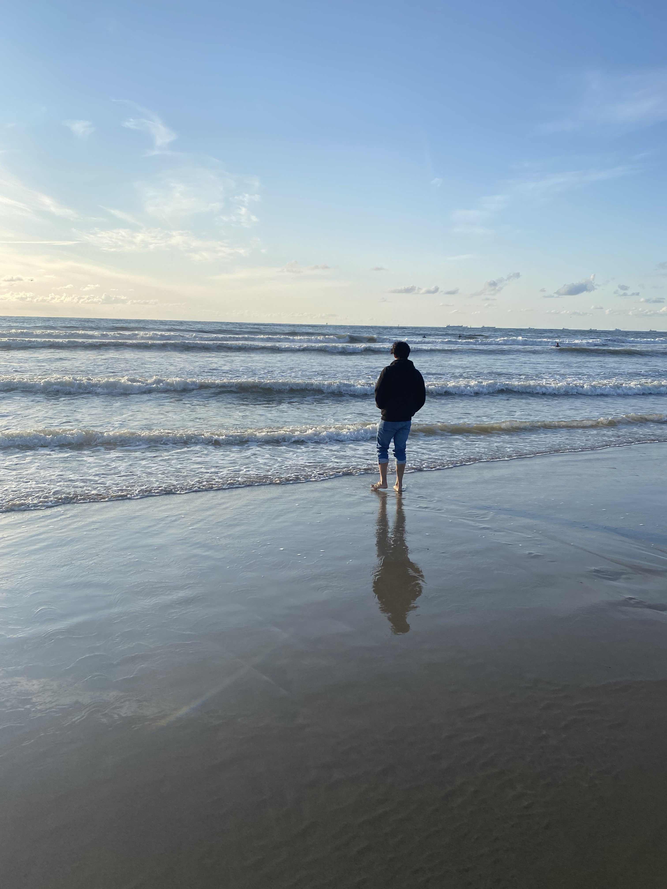

Hi there my name is Jahal. Experinced Culinary Director and Sushi Experts with a demonstrated history of working
in the hospitality industrie.Skilled in menu engineering, food & beverage, food cost anylysis, and restaurants management.
Strong operations professional graduated Hotel management.

These are the natural consequences of boldly trading in day dreams for reality.
Of having the humility to realize that our thoughts are not the entire universe.
Becoming a Nature lover means waking up to the force of creation that is unfolding all around us and within us, and realizing that we are only as separate from this power as we choose to be. listen means to turn down the volume on our own thoughts.
It means giving nature the gift of our attention.
We do this by refusing to watch whatever movie our mind wants to entertain us with,
the one about what we will do later that day, or the one about that situation at work, or the conversation we had yesterday.
To listen means to step out of our head and into our body,
and to fully experience the reality that is actually surrounding us at any given moment.